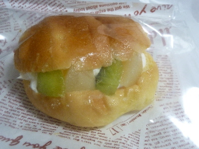

ブレッドファクトリー出雲店のフルーツロールパン
島根県出雲市渡橋町1066イオンスタイル出雲内
更新日:2017/11/30
イオン出雲内のパン屋さんで販売していた、果物とクリームの甘いパンです。

果物は白桃とキウイで、想像通りの味で美味しかったです。
具沢山ですよね。水分多そうですがぺったりとしていないのが凄いです。
果物とクリームのケーキは高級なのでなかなか食べれないですが、パンだとちょっと気軽に食べれていいですね。
TOP > パン > ブレッドファクトリー出雲店